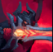
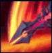
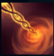
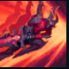
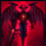

Aatrox


| Aatrox the Darkin Blade | |
|---|---|
| Release date | 13.06.2013 |
| Class | Juggernaut |
| Positions | Top, Middle |
| Resource | Manaless (Blood Well) |
| Range type | Melee |
| Adaptive type | Physical |
| Base statistics | |||
| Health | 580-2110 | Resource | N/A |
| Health regen. | 3-20 |
Resource regen. | N/A |
| Armor | 38-93.25 | Attack damage | 60-145 |
| Magic resist. | 32-53.25 | Crit. damage | 175% |
| Move. speed | 345 | Attack range | 175 |
Aatrox și cei asemenea lui au fost odată luptători nobili în războiul dus pentru a apăra Shurima de invazia Vidului. În cele din urmă, însă, au devenit un pericol și mai mare pentru Runeterra, fiind învinși doar de magia vicleană a muritorilor. După secole de întemnițare, Aatrox a fost primul care s-a eliberat, corupându-i și transformându-i pe cei suficient de nesăbuiți încât să încerce să mânuiască arma magică care-i conține esența. Acum, într-un corp furat, schimonosit și transformat în amintirea formei sale de demult, cutreieră Runeterra și vrea să-și dezlănțuie mult așteptata răzbunare catastrofală. |  |
IPOSTAZA INGERULUI MORTII Periodic,urmatorul atac al lui Aatrox provoaca daune fizice bonus si ii reface lui Aatrox o parte din viata,ambele in functie de viata maxima a tintei |
||
|---|---|---|---|---|
 |
TĂIȘUL DARKIN Aatrox izbește puternic cu sabia, provocând daune fizice. Poate lovi de trei ori, fiecare lovitură având o zonă AoE diferită |
|||
 |
CHEMAREA INFERNULUI Aatrox lovește pământul cu o forță enormă, provocându-i daune primului inamic lovit. Campionii și monștrii mari trebuie să părăsească rapid zona de impact. În caz contrar, vor fi trași înapoi în centru și vor suferi din nou daune. |
|||
|  |
NĂPUSTIREA UMBREI Pasiv, Aatrox se vindecă dacă le provoacă daune campionilor inamici. La activare, se năpustește în direcția-țintă. |
|||
 |
DISTRUGĂTORUL LUMILOR Aatrox își dezlănțuie forma demonică, terifiază minionii inamici din apropiere, primește daune din atac și viteză de mișcare, iar vindecările sale sunt mai eficiente. Dacă obține o doborâre, efectul este extins. |